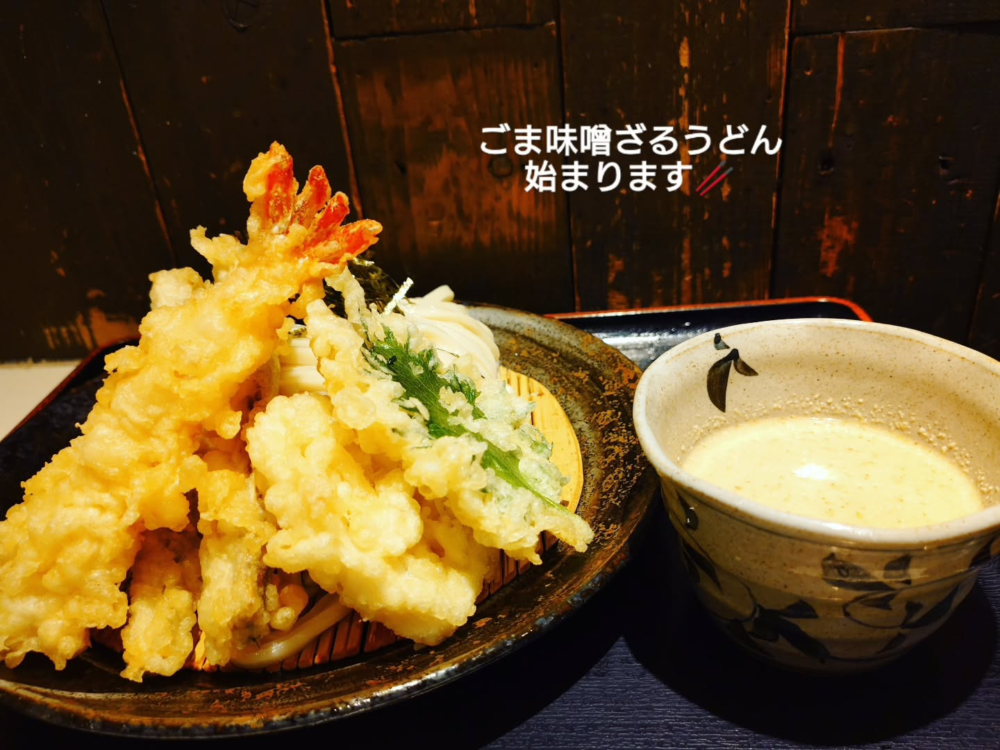
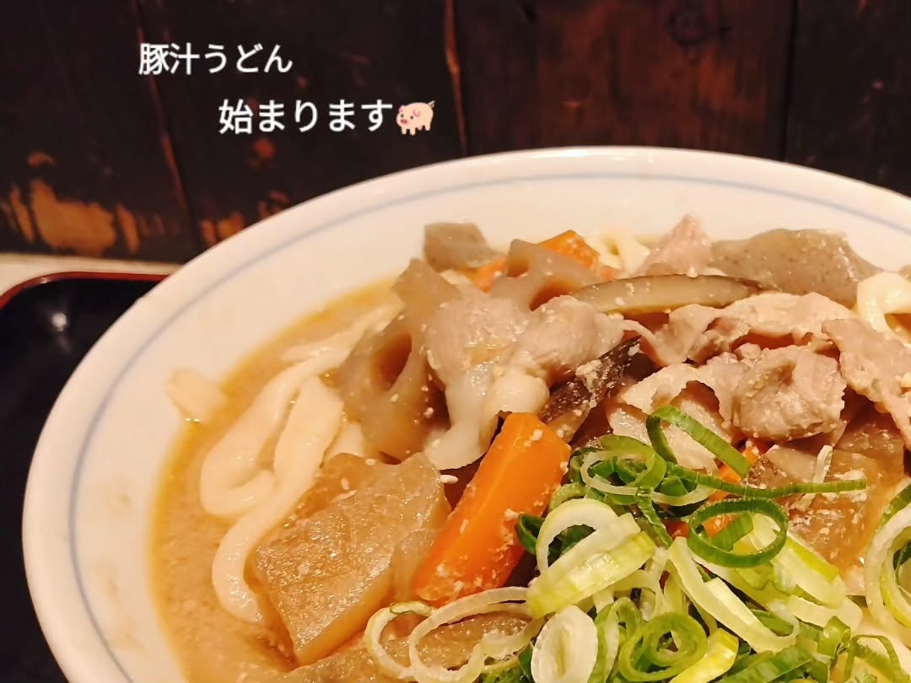
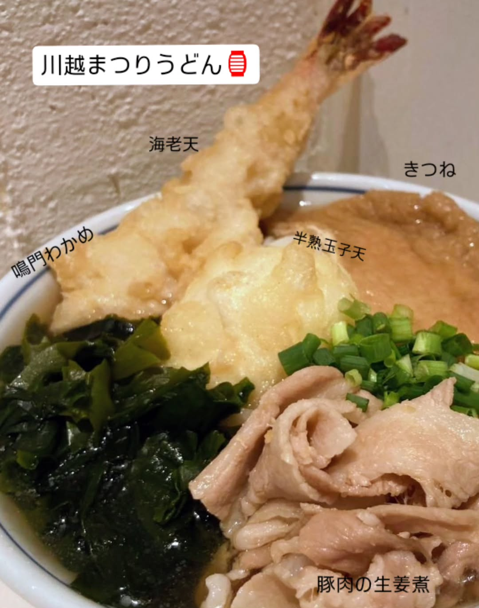

Conceptうどんのこと
本川越駅から歩いて1分、中原町の路地裏に暖簾を掛けています。
打ちたて・茹でたて・切りたての“三たて”。
お客さんの顔ぶれを見てから麺を打ち始め、
切って、茹でて、しめて、すっと出す。
讃岐うどんに惚れた店主の、手打ちの一杯です。
開店前から、路地に
列ができます。
THREE-FRESH UDON, HANDMADE.
Photosお店のうどんから

ごま味噌ざるうどん
ごま味噌のつけだれで。天ぷらと一緒に。

豚汁うどん
豚汁仕立ての、あたたかい一杯。

川越まつりうどん
海老天も、きつねも、半熟玉子天も。
写真とうどんの名前は、お店のInstagram（@hasenumaudon）の投稿から。
Access店舗情報
| 店名 | 手打うどん 長谷沼 |
|---|---|
| 住所 | 埼玉県川越市中原町2-1-13 |
| 最寄り | 西武新宿線 本川越駅 徒歩1分（中原町商店街） |
| 電話 | 049-277-4838 |
| 営業 | 11:00〜15:00 ※麺がなくなり次第、終了します |
| 定休日 | 水曜ほか（臨時休業あり） ※最新の営業日はInstagramでご確認ください |
| @hasenumaudon |
臨時休業をいただく日があります。
最新の営業日は、Instagramでご確認ください。